break、continue的简单使用
break：如果在循环内有个if判断，其条件为false，那么就会跳出循环，不在执行
continue：如果在循环内有个if判断，其条件为false，那么就会跳过本次循环，继续执行
1 | |
定义变量时，如果没有合适的初值，那么就应该对其赋上一个对应类型的初值
1 | |
100以内的质数
使用筛选法 用于求一段区间的所有质数
将不是素数的填充0，将2、3、5、7的倍数全部进行填充0
函数(强内聚，低耦合)
微软函数命名规范：不带下划线的是标准函数，可以供外接进行调用。带下画线的是非标准函数，供内部进行调用（命名：根据依赖关系，如果函数名前有一个下划线，表示一层依赖关系，两个表示有两层依赖关系）。
- 熟悉函数的语法
- 熟悉函数的调用机制
- 合理的设计各个函数模块（难），需要有足够的项目失败经验
强内聚，低耦合
内聚：所需资源自给自足，不依赖其它的模块。可以方便地移植到其它工作所需地模块中，重用性强。
内聚强的，责任清晰，一看到错误即可定位到某个具体模块中的具体函数中，将来debug难度较小
耦合：资源之间（全局变量）相互依赖，单一模块无法完成单一功能。难以方便地移植到其它工作所需地模块中，重用性较差。
耦合性高的，责任不清晰，将来debug难度较大。例如：街边爆米花
UI：User Interface 把编程的业务和界面分离
函数只做算法，UI交给用户
定义函数时需要给函数进行以下注释：
- 简要说明函数的功能和意义
- 描述函数的各个参数意义
- 描述返回值的意义
- 备注该函数的注意事项和其它的幺蛾子情况
- 修改的版本信息（据公司规定）
实例：
输出100以内的素数
代码实现：
1 | |
栈结构
解决问题的依赖关系：
A->B->C->D 返回：D->C->B->A
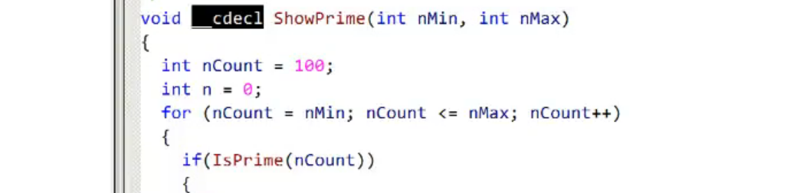
栈结构的这种特性可以记录函数的依赖关系
堆和栈是两回事：如果没有特殊说明 “堆栈”表示的就是栈，例如：牛奶、奶牛
函数的调用机制
1、需要维护一个栈结构用于记录函数的调用依赖关系，便于执行完内层函数后，知道流程应该回到哪里。
2、按照双方的调用约定进行传参
- 调用方称为：caller，被调用方称为 callee，caller在调用callee前需要双方约定调用细节
- 调用约定：（1）约定函数参数的传递顺序（2）参数的存储媒介（栈或者寄存器）（3）谁负责释放参数空间（有且仅有一方去实施）（4）返回值的存储媒介（栈或者寄存器）
- 调用约定，例如：__cdecl ，修饰在返回值后，函数名前，表示该函数使用C约定，在工程设置里默认情况下使用C约定
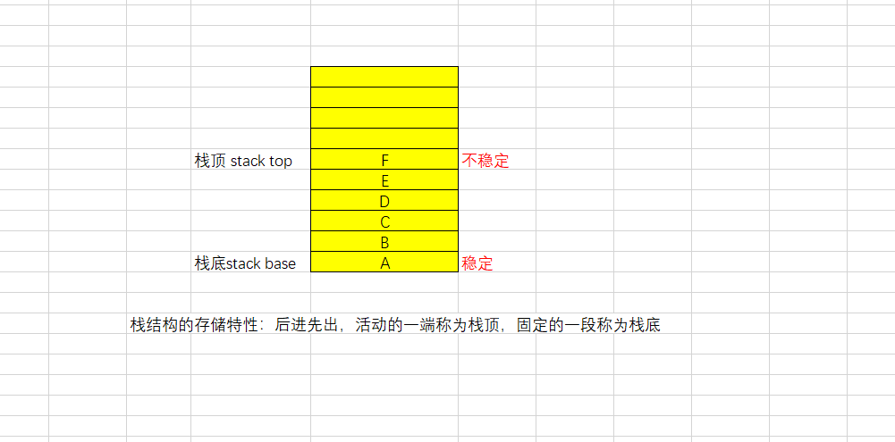
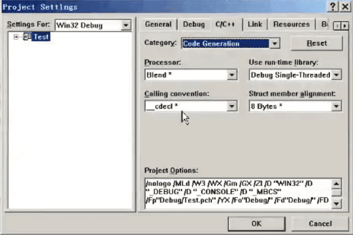
__cdecl(C约定)
- 函数参数按从右往左的方向传递
- 使用栈空间传递参数
- 右 caller 负责释放参数空间
- 返回值在寄存器中
__stdcall(标准调用约定)
- 函数参数按从右往左的方向传递
- 使用栈空间传递参数
- 右 callee 负责释放参数空间
- 返回值在寄存器中
__fastcall(快速调用约定)
- 左数前两个参数使用寄存器传递，其余各参数使用栈从右往左的方向传递
- 右 callee 负责释放参数空间
- 返回值在寄存器中
- 如果函数的参数只有两个，那么这两个参数就直接走寄存器
从右往左就是参数从最右往左的顺序依次放入到栈中
寄存器
CPU中的存储单元，价格昂贵但是其访问速度快
3、保存函数返回后应该执行的代码地址，简称“返回地址”。
记录回家的地址
4、保存调用方 caller 的栈地址。
5、更新当前栈底到 被调用方 callee的栈位置。
6、为局部变量申请栈空间（使用栈保存局部变量）。
7、/Zi 或者 /ZI (/Od) 编译选项会把局部变量的空间初值设为0xcccccccc（烫烫烫烫）debug自带/Zi 生成调试信息， /Od 禁用优化（没有初始化的局部变量就是栈上的随机值）
/Zi 编辑且继续的调试信息（调试程序时，修改程序后，不用重新编译，可继续调试）
烫：调试版下未初始化的局部变量
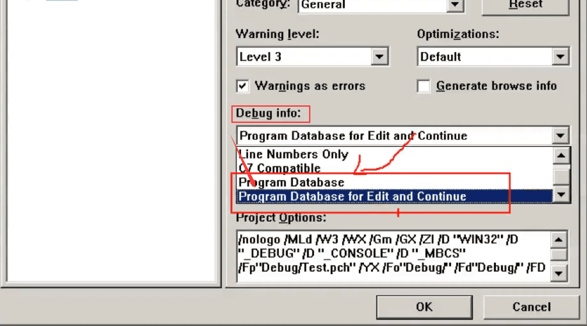
8、保存其它受影响的寄存器（/Zi 或者 /ZI 编译选项稳定保留12个字节（3个寄存器，一个寄存器4字节））
（指函数中使用寄存器会提前保存）12字节：别的寄存器有可能被这个函数覆盖的其它寄存器中的值
9、执行函数体
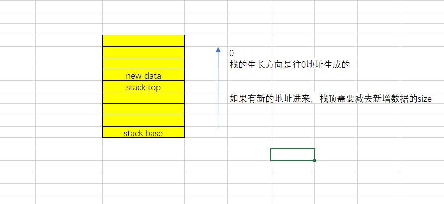
分析函数间的调用关系
代码：
1 | |
ShowPrime函数栈结构
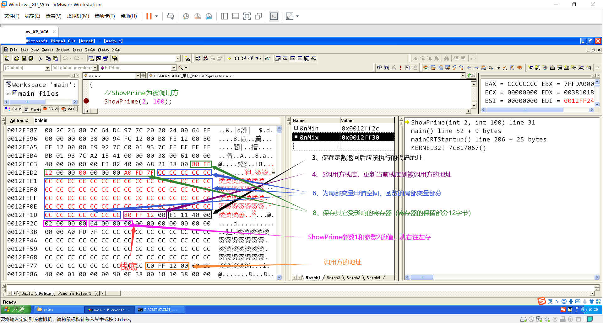
main函数栈结构
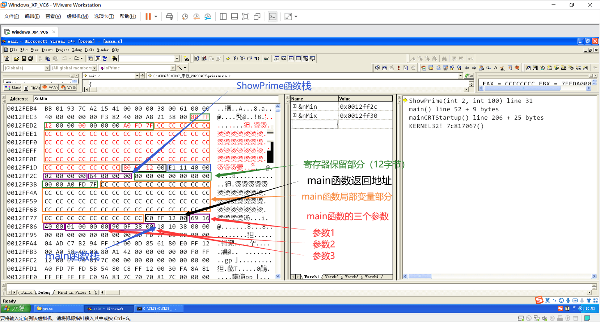
每个函数都有返回地址，如果没有返回地址，可以说这个函数”回不了家”。
单步从main函数走，在没有从main函数内调用其它子函数时，main函数的栈结构如下：
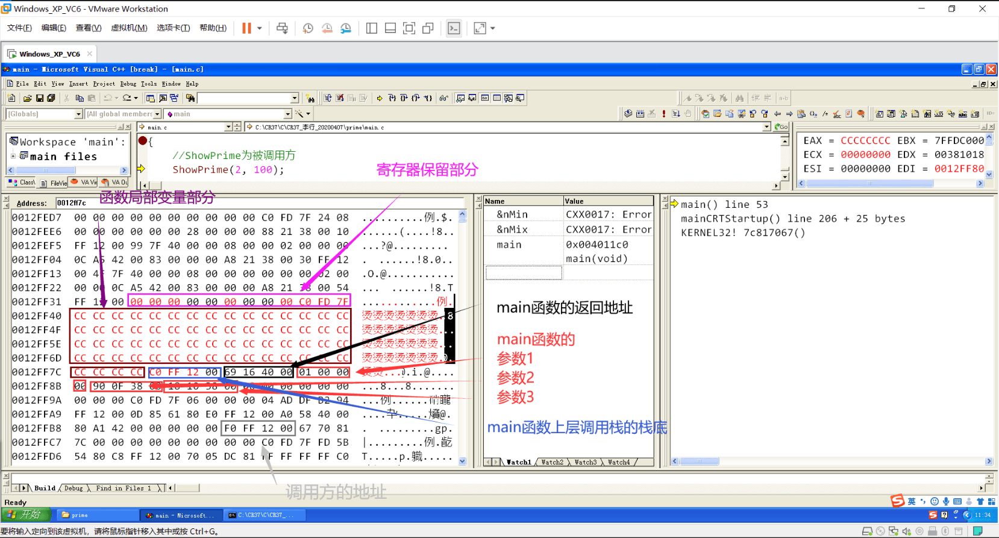
当main函数内未调用文件内的子函数时，在内存中只能看到main函数的栈结构，如果调用了子函数，内存就会更新，之后就可以看到main函数及子函数的栈数据
ShowPrime函数的栈结构
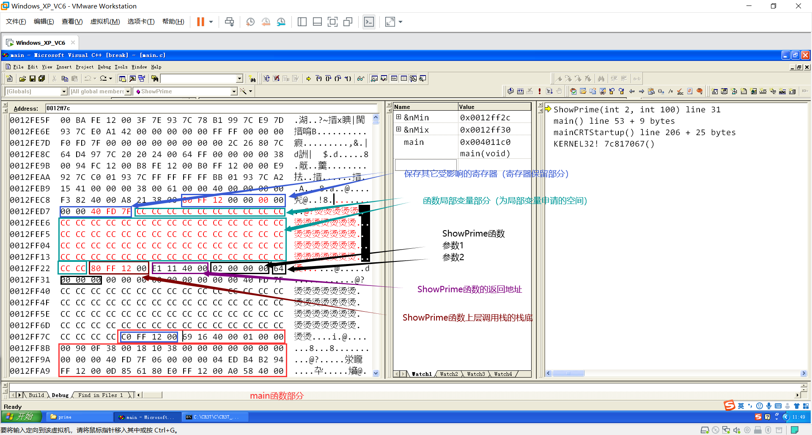
Isprime函数的栈结构
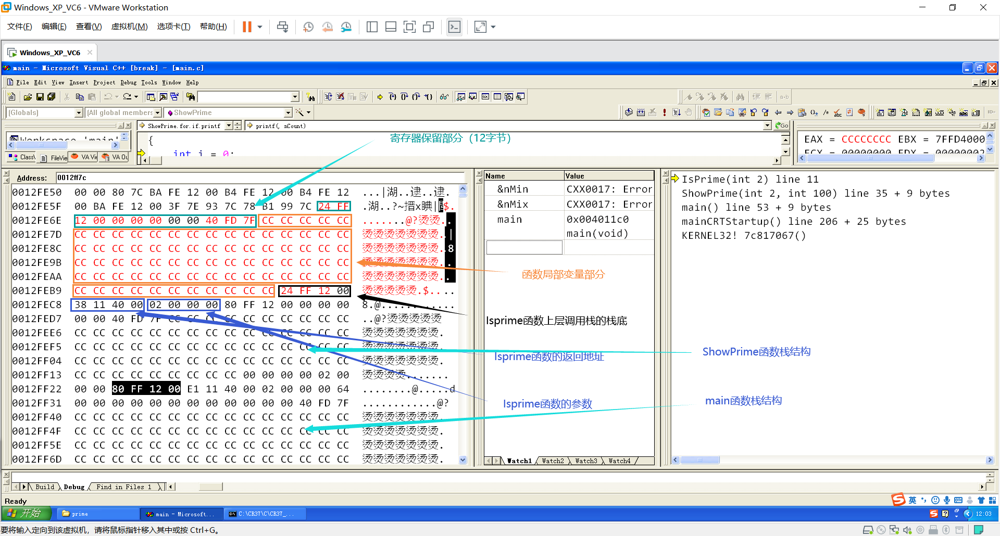
通过内存可以发现局部变量分配的空间远大于我们使用的空间
使用Winhex分析函数之间调用的关系
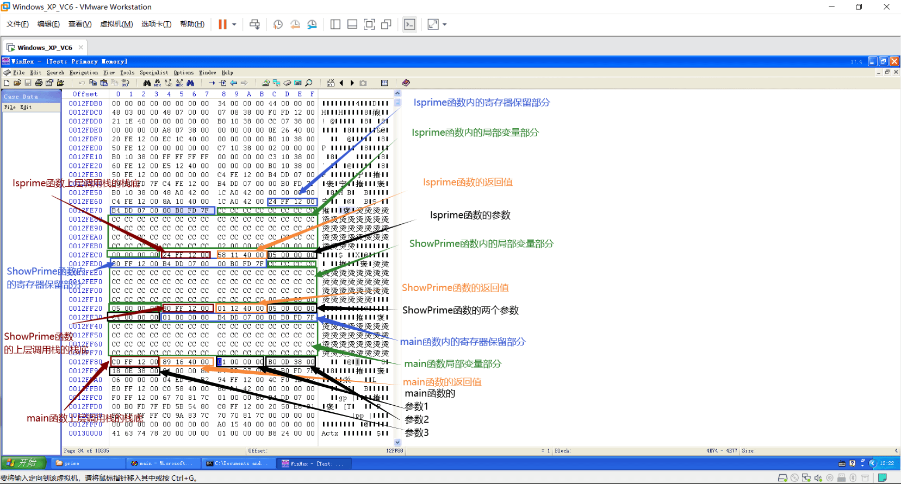
分析自己的Test程序内函数之间的调用关系
1 | |
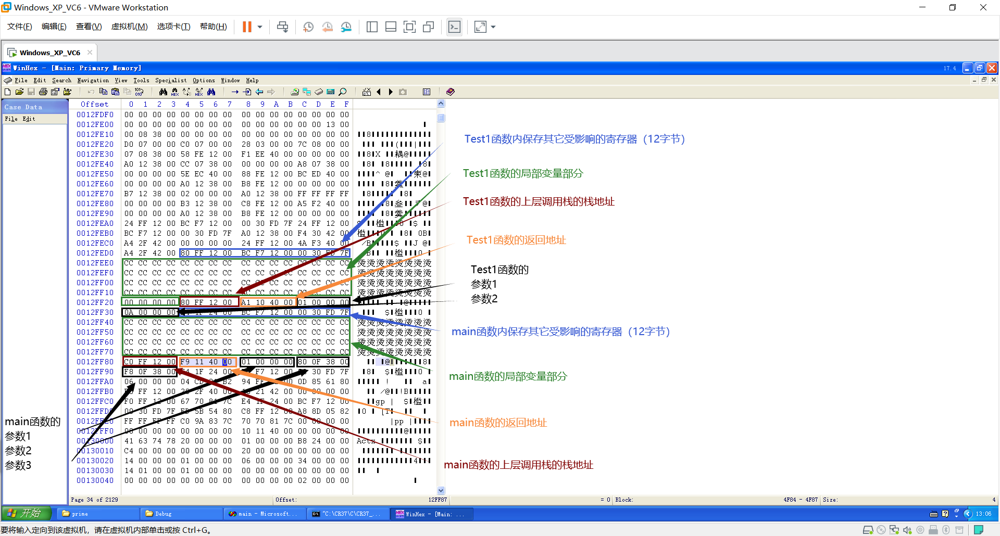